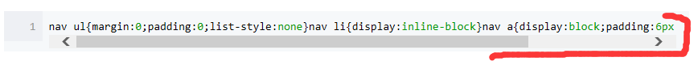

如何使用sass?
小课堂
分享人:火建强
目录
1.什么是sass
2.安装rub
3.如何编译，以及编译的几种方式
4.各有什么特点
5.编码实战
6.更多讨论
1.什么是sass
Sass 是一款强化 CSS 的辅助工具，它在 CSS 语法的基础上增加了变量 (variables)、嵌套 (nested rules)、混合 (mixins)、导入 (inline imports) 等高级功能，这些拓展令 CSS 更加强大与优雅。使用 Sass 以及 Sass 的样式库（如 Compass）有助于更好地组织管理样式文件，以及更高效地开发项目。
SCSS 与 Sass 异同
SCSS 是 Sass 3 引入新的语法，其语法完全兼容 CSS3，并且继承了 Sass 的强大功能。也就是说，任何标准的 CSS3 样式表都是具有相同语义的有效的 SCSS 文件。另外，SCSS 还能识别大部分 CSS hacks（一些 CSS 小技巧）和特定于浏览器的语法，
有哪些常用的属性
1、变量$
首先是变量($)用美元符号，用美元符号，而不用其他符号，是因为，在css中，美元符号没有任何实际意义，而且还很美观
视情况来使用
变量的引用
起名不能使用属性名，例如，height、width等等
2、嵌套
3、继承
继承使用@extend
2.第一步 安装rub
地址3.如何编译，编译的几种方式

- 嵌套输出方式 nested 它是默认值
- 展开输出方式 expanded
- 紧凑输出方式 compact
- 压缩输出方式 compressed 生产环境当中一般使用这个
嵌套输出方式 nested
展开输出方式 expanded
大括号另起一行
紧凑输出方式 compact
压缩输出方式 compressed
建议
自动化编译
考拉5.编码实 战
6.更多讨论
less和sass有什么区别，学那个
1.编译环境不一样
Sass的安装需要Ruby环境，是在服务端处理的，而Less是需要引入less.js来处理Less代码输出css到浏览器，也可以在开发环节使用Less，然后编译成css文件，直接放到项目中，也有 Less.app、SimpleLess、CodeKit.app这样的工具，也有在线编译地址。
2.变量符不一样
Less是@，而Scss是$，而且变量的作用域也不一样。
4.输出设置
Less没有输出设置，Sass提供4中输出选项：nested, compact, compressed 和 expanded。
5.Sass和Less的工具库不同
Sass有工具库Compass, 简单说，Sass和Compass的关系有点像Javascript和jQuery的关系,Compass是Sass的工具库。在它的基础上，封装了一系列有用的模块和模板，补充强化了Sass的功能。
Less有UI组件库Bootstrap,Bootstrap是web前端开发中一个比较有名的前端UI组件库，Bootstrap的样式文件部分源码就是采用Less语法编写。
sass和less没有什么大的区别，只要会css，sass、less都会写
7.参考文献
参考一: 官网
参考二: CSS 预处理语言的模块化实践
参考三: SASS用法指南（安装）
参考四: 四种编译方式
参考五: less和sass现状
鸣谢
感谢大家观看
武汉-web-12-火建强